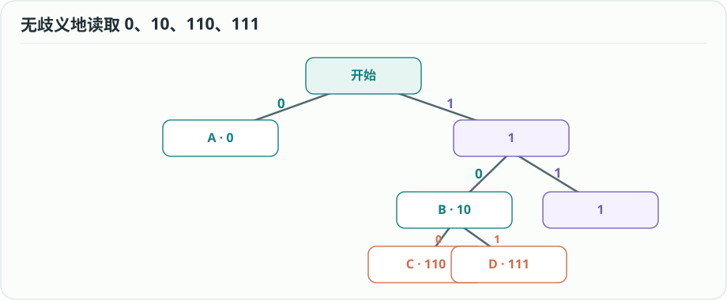
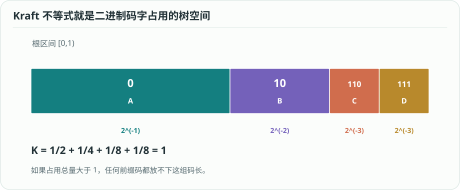
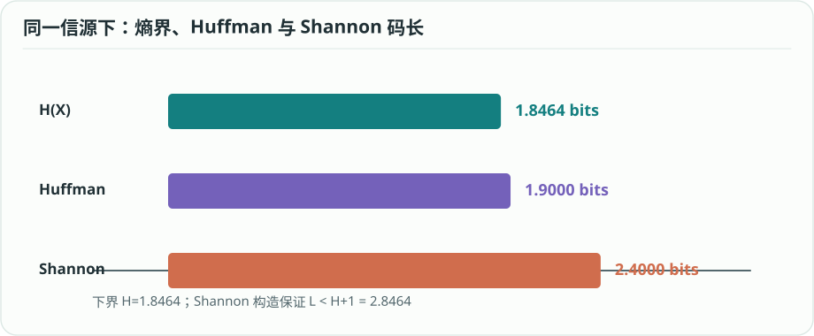

同样是四个符号，为什么平均码长可以少于 2 bits？
设信源 X 的分布是 p=(0.4,0.3,0.2,0.1)。若统一用 00、01、10、11 表示四个符号，每个符号都占 2 bits；但最常见的 A 占 40%，完全可以用短码字，将较长码字留给低频符号。这样的变长编码必须满足读者不会把码字边界读错。
前缀码（prefix code）要求任何码字都不能是另一条码字的开头。例如 A→0，B→10，C→110，D→111 就能即时译码。若 A→0、B→01，则连续比特串从左至右可能产生边界歧义。
用树理解前缀约束

给一个符号分配码字的长度 ℓᵢ，前缀树的每个叶子占用全树 2⁻ˡⁱ 的“空间份额”。若不同码字的树路径互不相互包含，这些份额就不重叠。
Kraft–McMillan 不等式：何时能找到前缀码？
一组正整数码长 ℓ₁,…,ℓₘ 能被某个二进制前缀码同时实现，当且仅当 Kraft 和不超过 1：

“必要性”来自每个叶子占用空间不能重叠；“充分性”意味着只要正整数长度列表满足不等式，就存在某种对应前缀码。对更宽泛的可唯一译码码，Kraft–McMillan 不等式同样必要，但并不意味着每个可唯一译码码原本就是前缀码。
这里只检查码长表的可构造性，不生成对应概率最优的码字。
平均码长的下界来自熵
对任意可唯一译码的二进制码，设其长度函数为 ℓ(x)，平均码长 L=∑p(x)ℓ(x)。其下界 H(X) 可以由 Kraft–McMillan 不等式与 KL 非负推出。
证明框架：令 K=∑2⁻ˡ⁽ˣ⁾≤1，并将 q(x)=2⁻ˡ⁽ˣ⁾/K 归一化。于是 D(p∥q)=L−H(X)+log₂K，即 L=H(X)+D(p∥q)−log₂K≥H(X)。每一步都明确依赖码长满足 Kraft 约束。
Shannon 构造给出 H ≤ L < H+1
对正概率事件 x，选取整数码长 ℓ(x)=⌈−log₂p(x)⌉。由于 2⁻ˡ⁽ˣ⁾≤p(x)，这些长度满足 Kraft 约束，必然存在前缀码。又因为 −log₂p(x)≤ℓ(x)<−log₂p(x)+1，按 p(x) 加权即可得到：
如果某些符号本身概率为 0，可先在真实支持集上做编码；不要在计算 l(x) 时直接对 0 取对数。这个上界只是一个一般性构造保证，不等于“Shannon 长度总是最优”。

为什么块编码能让额外开销按 1/n 缩小？
对 i.i.d. 信源，把 n 个符号视为一个新的“超级符号”，其熵为 H(Xⁿ)=nH(X)。对 Xⁿ 使用同一个 Shannon 长度构造得到 H(Xⁿ)≤Lₙ<H(Xⁿ)+1；两边除以 n：
因此渐近每符号平均长度可以逼近熵。注意这个简单构造可能需要为指数数量的块序列建表，并非实用的大规模压缩方案；算术编码等方法不需要显式枚举所有块序列。
亲自算：四个符号的三种长度方案
| 符号 | 概率 | 定长 | Shannon 长度 | 最优 Huffman 长度 |
|---|---|---|---|---|
| A | 0.4 | 2 | 2 | 1 |
| B | 0.3 | 2 | 2 | 2 |
| C | 0.2 | 2 | 3 | 3 |
| D | 0.1 | 2 | 4 | 3 |
直接代入得到三种 L 分别是 2.0、2.4 和 1.9 bits/符号。这里的 Shannon 构造虽然满足理论上界，但比这个例子的定长码还长；上界不是优化质量保证。下一章具体解释 Huffman 如何找到 1.9。
from math import log2, ceil
p = [.4, .3, .2, .1]
H = -sum(v*log2(v) for v in p)
lens = [ceil(-log2(v)) for v in p]
L = sum(a*b for a,b in zip(p,lens))
K = sum(2**(-length) for length in lens)
assert H <= L < H + 1 and K <= 1
print(round(H,4),lens,L,K) # 1.8464 [2,2,3,4] 2.4 0.6875来源与延伸阅读
- MIT 6.441 (2016)，Chapter 6：变长无损压缩、可唯一译码、前缀码和 Huffman。
- Cover & Thomas，§5.2–5.5：Kraft–McMillan 不等式、最优码长上下界。
- Stanford EE376A：AEP 与源编码课程衔接。